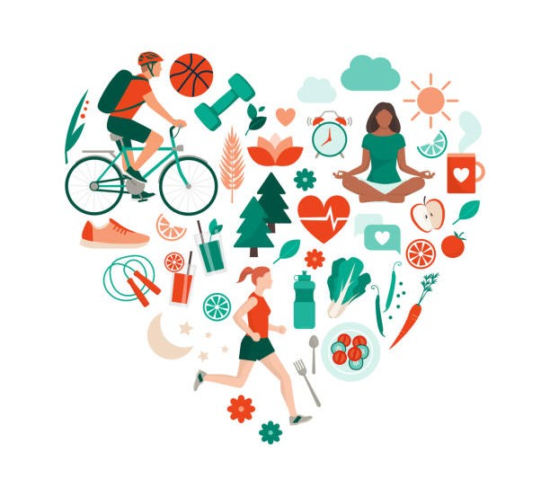
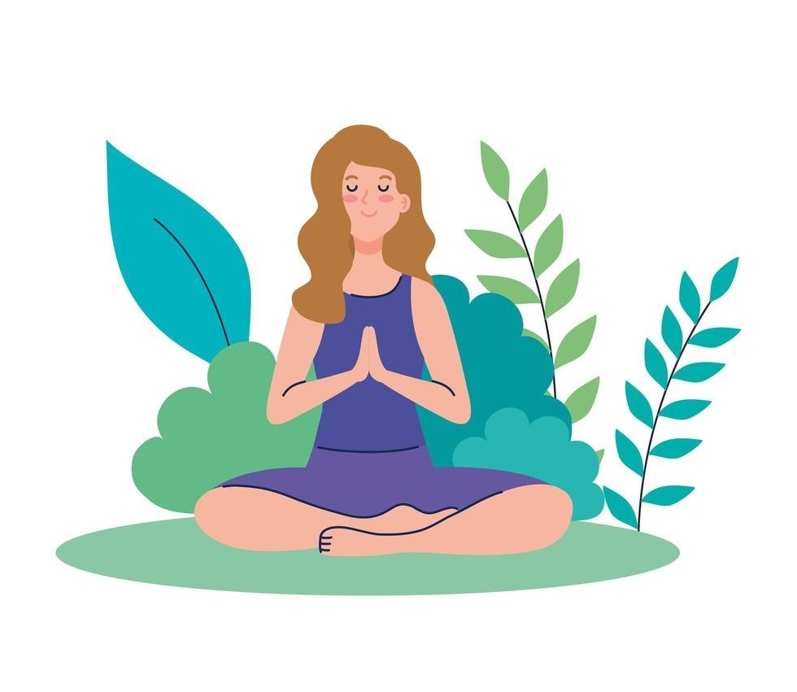

Managing stress and Anxiety

Strategies to cope with Stress, Anxiety or Distress
When many things feel uncertain or out of our control, one of the most effective ways we can manage stress and anxiety is to focus on the actions that are in our control. Here are some ways you can take intentional steps to look after your physical and emotional wellbeing during this challenging time:
Learn how to protect yourself and others from COVID-19. The Australian Department of Health has recommended important actions we can all take to protect against infection and prevent the virus from spreading including practising good hygiene, self-isolation, and social (physical) distancing.

Acknowledge your feelings. Whatever you are feeling right now, know that it’s okay to feel that way. Allow yourself time to notice and express what you’re feeling. This could be through journaling, talking with others, or channelling your emotions into something creative (e.g., drawing, painting, poetry, music). Mindfulness meditation exercises can help us stay grounded in the midst of an emotional storm. You can learn how to witness and let thoughts and feelings come and go in their own time, without getting overwhelmed by them.

Maintain your day-to-day activities and a routine as much as possible. Having a healthy routine can have a positive impact on your thoughts and feelings. Go back to basics: eating healthy meals, physical exercise (e.g., walking, stretching, running, cycling), getting enough sleep, and doing things you enjoy. Even if you're in self-quarantine, or working from home, there are many ways to develop new routines and stay healthy.
During this time of change, it's natural for our minds to think of all the usual activities we may not be able to do at the moment. Make a conscious shift to focus on the activities we are still able to do, or those that we may have more opportunity to do if we're at home more often. Some ideas could be to:
- Keep learning and maintaining your study
- Read a book
- Listen to a podcast
- Try out a new hobby or skill (e.g., cook a new recipe, play an instrument, learn a language, learn how to sew, gardening).